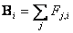
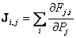
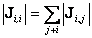
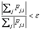

The steady-state airflow analysis for multiple zones requires the simultaneous solution of equation (5) for all zones. Since the function in equation (1) may be, and usually is, nonlinear, a method is needed for the solution of simultaneous nonlinear algebraic equations. The Newton-Raphson (N-R) method [Conte and de Boor 1972 p. 86] solves the nonlinear problem by an iteration of the solutions of linear equations. In the N-R method a new estimate of the vector of all zone pressures, {P}*, is computed from the current estimate of pressures, {P}, by
| {P}* = {P} - {C} | (6) |
where the correction vector, {C}, is computed by the matrix relationship
| [J]{C} = {B} | (7) |
where {B} is a column vector with each element given by
|
 |
(8) |
and [J] is the square (i.e. N by N for a network of N zones) Jacobian matrix whose elements are given by
|
 |
(9) |
In equations (8) and (9) Fj,i and ¶Fj,i/¶Pj are evaluated using the current estimate of pressure {P}. The ContamX program contains subroutines for each airflow element which return the mass flow rates and the partial derivative values for a given pressure difference input.
Equation (7) represents a set of linear equations which must be set up and solved for each iteration until a convergent solution of the set of zone pressures is achieved. In its full form [J] requires computer memory for N2 values, and a standard Gauss elimination solution has execution time proportional to N3. Sparse matrix methods can be used to reduce both the storage and execution time requirements. A skyline solution process following the method presented in [Dhatt 1984] was chosen. This method can be used to solve equations with symmetric or asymmetric matrices. It stores no zero values above the highest nonzero element in the columns above the diagonal and no zero values to the left of the first nonzero value in each row below the diagonal. In this case the Jacobian matrix is symmetric. CONTAM provides two solution methods for the linear equations: Skyline (also called profile method) and Pre-conditioned Conjugate Gradient (PCG). PCG may be useful for problems with many zones and junctions.
Analysis of the element models will show that
|
 |
(10) |
This condition allows a solution without pivoting, although scaling may be useful. Note that the degree of sparsity of the Jacobian matrix after factoring is dependent on the ordering of the zones. Ordering can be improved by various algorithms or rules-of-thumb. In AIRNET it was easy to define an airflow network which had no unique solution. The ContamW user interface insures the correct interconnection of the airflow elements in the network.
CONTAM allows zones with either known or unknown pressures. The constant pressure zones are included in the system of equations and equation (7) is processed so as to not change those zone pressures. This gives flexibility in defining the airflow network while maintaining the symmetric set of equations. A sufficient condition for the Jacobian to be nonsingular [Axley 1987] is that all of the unknown pressure zones be linked by pressure dependent flow paths to (a) constant pressure zone(s). In CONTAM the ambient (or outdoor) air is treated as a constant pressure zone. The ambient zone pressure is assumed to be zero for the flow calculation causing the computed zone pressures to be values relative to the true ambient pressure and helping to maintain numerical significance in calculating DP.
Conservation of mass at each zone provides the convergence criterion for the N-R iterations. That is, when equation (4) is satisfied for all zones for the current system pressure estimate, the solution has converged. Sufficient accuracy is attained by testing for relative convergence at each zone:
|
 |
(11) |
with a test (S|Fj,i| < e1, the absolute convergence factor) to prevent division by zero. The magnitude of e can be established by considering the use of the calculated airflows, such as in an energy balance. In any case, round-off errors may prevent perfect convergence (e = 0).
Numerical tests of the N-R method solution indicated occasional instances of very slow convergence as the iterations almost oscillate between two different sets of values. In AIRNET, this was handled by a Steffensen acceleration process. More recent tests by the author and by Wray [Wray 1993] indicate that the use of a simpler constant under-relaxation coefficient produces a faster, reliable convergence acceleration process. Equation (6) for the iteration process becomes
| {P}* = {P} - w{C} | (12) |
where w is the relaxation coefficient. A relaxation coefficient of 0.75 has been found to be usable for a broad range of airflow networks. This value is not a true optimum but appears to work quite well without the computational cost of finding the theoretically optimum value.
When convergence is progressing rapidly, under-relaxation (w < 1) slows convergence compared to no relaxation. To prevent this a global convergence value is computed:
|
|
(13) |
When g* < ag, w is set to 1. Currently CONTAM uses a = 30%. This often reduces the number of iterations. This is simple under-relaxation. CONTAM also may alternatively use a simple trust region method implemented by David M. Lorenzetti based on [Dennis and Schnabel 1996].
Newton's method requires an initial set of values for the zone pressures. These may be obtained by including in each airflow element model a linear approximation relating the flow to the pressure drop:

|
(14) |
Conservation of mass at each zone leads to a set of linear equations of the form
| [A]{P} = {B} | (15) |
Matrix [A] in equation (15) has the same sparsity pattern as [J] in equation (7) allowing use of the same sparse matrix solution process for both equations. This initialization handles stack effects very well and tends to establish the proper directions for the flows. The linear approximation is conveniently provided by the laminar regime of the element models used by CONTAM. When solving a set of similar problems, as when approximating a transient solution by successive steady-state solutions, it tends to be preferable to use the previous solution for the zone pressures as the initial values for the new problem.